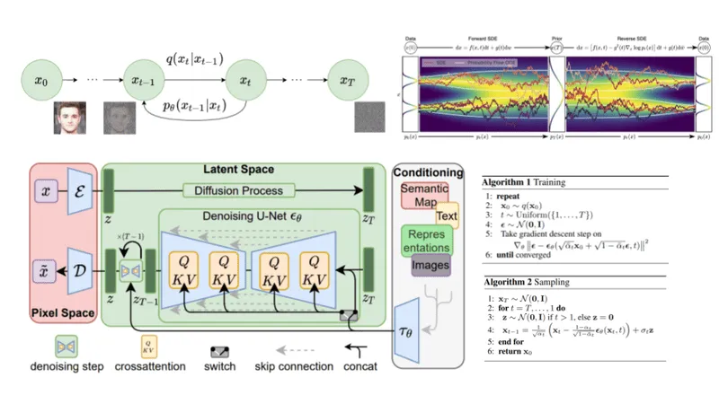
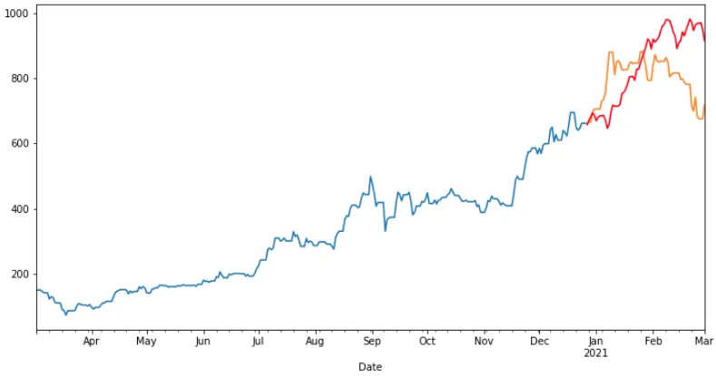
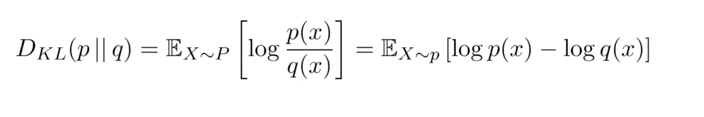
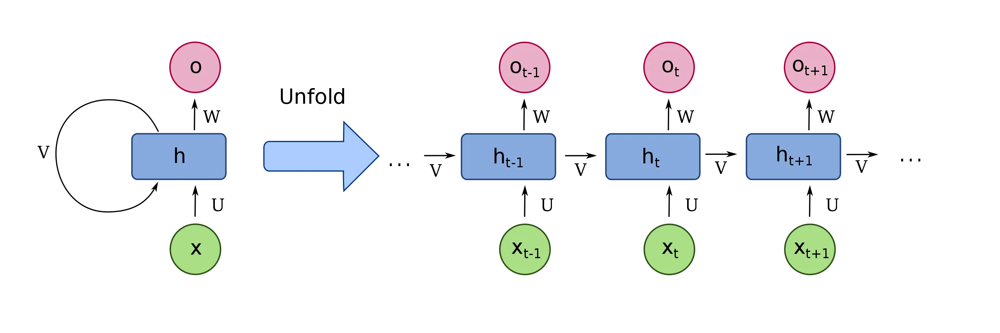
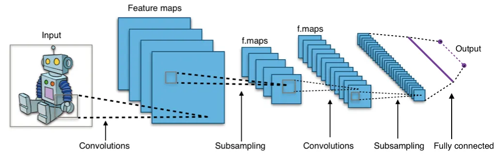
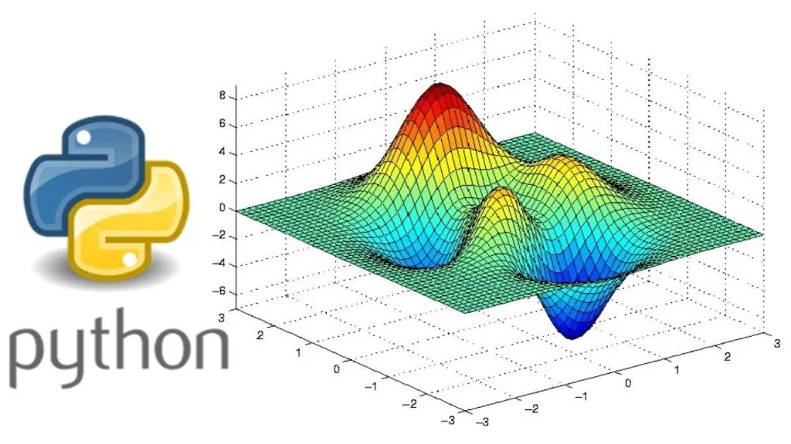

Taha Binhuraib
Blog Posts
← Back to Home
Blogs

Diffusion Models Demystified
Read on Medium

An Introduction to Time Series Analysis with ARIMA
Read on Medium
Deploying LLMs with Vertex AI
Read on Medium

Kullback-Leibler (KL) Divergence and Cross-Entropy
Read on Medium

The Essence of RNNs
Read on Medium

NLP with CNNs
Read on Medium

The Mathematical Essence of ML
Read on Medium